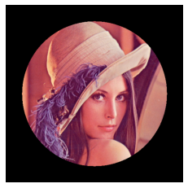
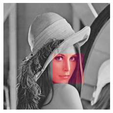

import numpy as np
import scipy
import scipy.misc
import matplotlib.pyplot as plt
# mask
x = np.array([1,2,3,4,5])
print(x>3)
x[x>3]
[False False False True True]
array([4, 5])
讀取 scipy 內建影像，並轉為灰階¶
face = scipy.misc.face(gray=True)
plt.imshow(face, cmap=plt.cm.gray)
plt.axis('off')
plt.show()
圓以外設成黑色(0)，白色(255)¶
lx, ly = face.shape
# 取得影像 X、Y 座標
X, Y = np.ogrid[0:lx, 0:ly]
# 圓以外設成黑色(0)
mask = (X - lx/2)**2 + (Y - ly/2)**2 > lx*ly/4
face[mask] = 255
X.shape, Y.shape
((768, 1), (1, 1024))
plt.imshow(face, cmap=plt.cm.gray)
plt.axis('off')
(-0.5, 1023.5, 767.5, -0.5)
縮小圓¶
# 縮小圓, lx*ly/4 ==> lx*ly/6
# 圓以外設成黑色(0)
mask = (X - lx/2)**2 + (Y - ly/2)**2 > lx*ly/6
face[mask] = 255
plt.imshow(face, cmap=plt.cm.gray)
plt.axis('off')
(-0.5, 1023.5, 767.5, -0.5)
讀取影像檔¶
import matplotlib.image as mpimg
img = mpimg.imread('./lena.jpg')
plt.imshow(img)
plt.axis('off')
plt.show()
---------------------------------------------------------------------------
FileNotFoundError Traceback (most recent call last)
<ipython-input-8-65003fdaccc7> in <module>
1 import matplotlib.image as mpimg
2
----> 3 img = mpimg.imread('./lena.jpg')
4 plt.imshow(img)
5 plt.axis('off')
C:\ProgramData\Anaconda3\lib\site-packages\matplotlib\image.py in imread(fname, format)
1494 response = io.BytesIO(response.read())
1495 return imread(response, format=ext)
-> 1496 with img_open(fname) as image:
1497 return (_pil_png_to_float_array(image)
1498 if isinstance(image, PIL.PngImagePlugin.PngImageFile) else
C:\ProgramData\Anaconda3\lib\site-packages\PIL\Image.py in open(fp, mode, formats)
2910
2911 if filename:
-> 2912 fp = builtins.open(filename, "rb")
2913 exclusive_fp = True
2914
FileNotFoundError: [Errno 2] No such file or directory: './lena.jpg'
讀取影像檔，並轉為灰階¶
import matplotlib.image as mpimg
def rgb2gray(rgb):
print(rgb.shape)
# gray = 0.2989 R + 0.5870 G + 0.1140 B
return np.dot(rgb, [0.2989, 0.5870, 0.1140])
img = mpimg.imread('./lena.jpg')
gray = rgb2gray(img)
plt.imshow(gray, cmap='gray')
plt.axis('off')
plt.show()
(512, 512, 3)
圓形特效¶
img = mpimg.imread('./lena.jpg')
lx, ly, lz = img.shape
# 取得影像 X、Y 座標
X, Y, Z = np.ogrid[0:lx, 0:ly, 0:lz]
X.shape, Y.shape, Z.shape
((512, 1, 1), (1, 512, 1), (1, 1, 3))
type(img), img.shape
(numpy.ndarray, (512, 512, 3))
img.flags
C_CONTIGUOUS : True
F_CONTIGUOUS : False
OWNDATA : False
WRITEABLE : False
ALIGNED : True
WRITEBACKIFCOPY : False
UPDATEIFCOPY : False
RGB 分別處理¶
img2 = np.array(img.copy())
mask = (X - lx/2)**2 + (Y - ly/2)**2 > lx*ly/6
R = img2[:,:,0:1]
R[mask] = 0
# R.shape
G = img2[:,:,1:2]
G[mask] = 0
B = img2[:,:,2:]
B[mask] = 0
mask_rgb = np.concatenate((R,G,B), axis=2)
mask_rgb.shape
(512, 512, 3)
plt.imshow(mask_rgb)
plt.axis('off')
plt.show()

逐點處理(pixel-wised)¶
# 圓以外設成黑色(0)
# mask = (X - lx/2)**2 + (Y - ly/2)**2 > lx*ly/6
img2 = img.copy()
for i in range(lx):
for j in range(ly):
if (i - lx/2)**2 + (j - ly/2)**2 > lx*ly/6:
img2[i,j,:] = 255
plt.imshow(img2)
plt.axis('off')
plt.show()
採剪¶
import matplotlib.image as mpimg
img = np.array(mpimg.imread('./lena.jpg'))
img_trim = img[128:384, 128:384, :]
plt.imshow(img_trim)
plt.axis('off')
plt.show()
import matplotlib.image as mpimg
img = np.array(mpimg.imread('./lena.jpg'))
img_trim = img[244:386, 236:386, :]
plt.imshow(img_trim)
plt.axis('off')
plt.show()
黑白、彩色混合¶
gray = rgb2gray(img)
gray.shape
(512, 512, 3)
(512, 512)
gray = gray.reshape(*gray.shape,1)
gray.shape
(512, 512, 1)
gray_rgb = np.concatenate((gray, gray, gray), axis=2) / 255
gray_rgb.shape
(512, 512, 3)
plt.imshow(gray_rgb)
plt.axis('off')
plt.show()
gray_rgb[244:386, 236:386, :] = img_trim / 255
plt.imshow(gray_rgb)
plt.axis('off')
plt.show()
